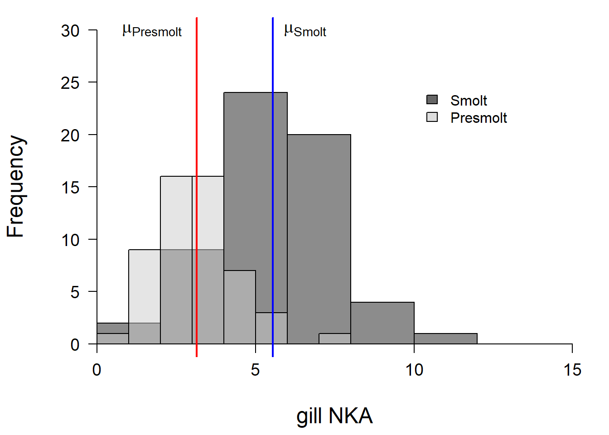

Inferential statistics

Introduction
The objective of this assignment is to help you formalize and test some simple hypotheses using basic statistical methods in R. This week we discussed questions we can ask with null hypothesis significance testing and the strengths and weaknesses of this approach. In this assignment, we will attempt to demonstrate some of those ideas while you become familiar with performing null hypothesis significance tests in R.
By the end of this lab, you should be able to: 1) formally state the null hypothesis that is being tested, as well as alternatives to the null; 2) conduct some basic statistical tests of those hypotheses; and 3) communicate the results of those tests with respect to the original hypothesis.
We’ll work with a few packages from the tidyverse this week, so go ahead and add this to the start of your homework file
Exercises
The smolt data
This week we are going to work with a new dataset, called smolts. These data come from a lab experiment that examined differences in physiology, behavior, and survival of endangered, juvenile Atlantic salmon (Salmo salar) from the largest remaining population in the United States.
The Atlantic salmon is an anadromous (sea-run) fish that spawns in fresh water and grows in the ocean. After they hatch from their eggs in fresh water, juvenile salmon spend about 2 years growing in streams until they grow large enough to make the migration to ocean feeding grounds off the west coast of Greenland as smolts. During the spring before they make this migration, the fish undergoes a transformation known as ‘smolting’, which involves a complex suite of physiological, morphological, and behavioral changes. Notable among these changes is the increased ability to osmoregulate in salt water as they grow from pre-smolts to smolts. This ability is enhanced by up-regulation and increased expression of the saltwater isoform of gill Na+,K+-ATPase (NKA), an enzyme used in active transport of ions in the ocean.
Gill NKA activity increases seasonally from low levels early in the run (pre-smolts), to high levels in the peak of the run (smolts), and eventually decreases late in the run (post-smolts) in response to changes in daylight (photoperiod) and warming temperatures in spring. We can use gill NKA activity as an indicator of the physiological development of smolts to assess their readiness to migrate from rivers to the ocean where they will grow into adults.
This study compared physiological measurements of smolts throughout the course of the migratory window to their preferences for salt water or fresh water in laboratory experiments, as well as plasma osmolality (amount of salt in blood) and survival following exposure to full sea water. We used a two-chamber tank that allowed us to keep salt water in one compartment and fresh water in the other and we tracked fish behavior in the tank using high-end infrared cameras and sophisticated tracking software.
Let’s read in the data. We’ll use the optional argument stringsAsFactors = FALSE to tell R to read in all string variables as character strings (not factors) because we’ll want to get rid of one our three groups for this week.
# Read in the data from comma-separated text file
smolts = read.csv('data/smolts.txt', stringsAsFactors = FALSE)
# Look at the first few rows of data
head(smolts)
# Examine data structure
str(smolts)The dataset contains nine columns, or variables, defined as:
-
ID: This is the last five digits of a hexidecimal PIT tag code -
stage: classification into presumed early (Presmolt), middle (Smolt), and late (Postsmolt) parts of the run -
fl: the fork length of fish (mm) -
mass: the mass of the fish (g) -
nka: gill NKA activity for each fish prior to testing -
osmolality: blood plasma osmolality following exposure to full sea water -
pref: proportion of time spent in high salt water compartment of tank -
max: maximum continuous time spent in high salt water compartment tank -
n.switch: the number of times the fish moved between high salt water and low salt water compartments of the behavior tank
We will use these data to compare NKA of one group to the overall mean (one-sample tests), to compare differences in NKA and osmolality between groups (two-sample tests), and to compare the frequency of high- and low-osmolality responses between groups (frequency or contingency table analysis). We will also introduce a couple of tests for testing assumptions of normality (Shapiro-Wilk test) and for testing assumptions of equal variances (variance test) along the way.
One sample t-tests
Recall that with a one-sample t-test our objective is to determine whether or not a sample that we have taken deviates from the mean of a population of interest. In this case, we require measurements of a single, continuous variable and some value to which we wish to compare those. We might be interested in this kind of question if we are trying to identify anomalous observations within a specific statistical or biological sample, or if we are trying to compare our data to literature values for which only a mean was reported (ugh!). Remember that what we are doing statistically is testing whether the population mean is contained within the 95% confidence interval (CI) for the sampling distribution of our variable of interest.
First, we’ll make a couple of objects out of the data in the smolts dataframe
Let’s make a new dataframe that includes only the stages Presmolt and Smolt.
# Make a subset of the smolts data that excludes
# the stage Postsmolt
ps <- subset(smolts, stage != 'Postsmolt')Have a look at each of these to see how R “sees” them before we move on using str(), head(), or whatever other methods you’ve picked up. This isn’t a homework question, just a good practice that you should be getting used to now.
Now let’s use these data to work out a simple example. Your objective is to compare NKA activity of the stage Smolt to the sampling mean for gill NKA activity in the data set (4.16) using a one-sample t-test. You will need to choose an appropriate Type-I error rate (confidence level), and alternative hypothesis ahead of time in your analysis.
If you have forgotten how to do this, you can look at Chapter 6.1 of The Worst Stats Text eveR, or you can type:
Question 1. First, formally state the null hypothesis for this test. Then, state the alternative hypothesis that you chose. If you want to use greater or less alternatives realize that this refers to the argument x in the t.test function as compared to mu or y (depending on whether it is a one or two sample test).
Now, run the test.
Question 2. Does gill NKA activity of the stage Smolt differ significantly from the population mean? Report this in sentence format along with:
The mean nka for the Smolt stage
The confidence interval for this mean and state the confidence level in your answer (will depend on your choice of confidence level above)
The t-statistic, degrees of freedom, and p-value for the test in parentheses at the very end of the sentence.
Two-sample t-test
Now we will look at what you might think of as a more ‘standard’ application of the t-test. Here we are interested in comparing two sampling distributions from one or more biological populations to determine whether or not they come from the same statistical population. In English, we want to test whether gill NKA activities differs between presmolts and smolts.
For this example:
First, test the assumptions of normality and equal variances.
# In case you forgot the functions:
# Shapiro-Wilk normality test
?shapiro.test
# Fisher's F test of equal variances
?var.test We can also plot the distributions of gill nka for the Presmolt and Smolt stages to see if they look normal.
ggplot(ps, aes(x = nka, fill = stage)) +
geom_histogram() +
xlab("Gill NKA Activity") +
ylab("Count")
Question 3. Are the sampling distributions for gill NKA activity of smolts and presmolts both normal based on the results of the Shapiro-Wilk test and the histogram above? Are the variances equal based on the F test?
Conduct a two-sample t-test to compare gill NKA activity (nka) between Smolt and Presmolt stages.
Question 4. State the null hypothesis for the two-sample t-test and the alternative hypothesis that you chose. Justify your choice of alternative.
Question 5. Did you specify the var.equal argument? If so, what did you choose and what was the corresponding degrees of freedom (df)?
If you did not specify this argument, note that R made a choice for you on the fly, and you can tell what that choice was by the df listed in the output from the test. We discussed the df for the t-test in class. In the case of the two-sample test, the df should be calculated as \((n_1-1)+(n_2-1)\), or 111 in this case, if the variances are equal. If you ran the t.test with this assumption the first time, go back and run it the other way and look at the df:
# Re-run the two-sample test
t.test(nka ~ stage, data = ps)
Welch Two Sample t-test
data: nka by stage
t = -7.6894, df = 105.22, p-value = 8.247e-12
alternative hypothesis: true difference in means is not equal to 0
95 percent confidence interval:
-3.025163 -1.784862
sample estimates:
mean in group Presmolt mean in group Smolt
3.146038 5.551050 Weird, huh? How do you get a part of a degree of freedom?? And, it looks like we are short a few degrees of freedom, doesn’t it? So, what’s happening here?
We have to sacrifice a few extra degrees of freedom to stay conservative and avoid making a Type-I error here. What this means is that we assume our sample size is a little smaller than it really is, so estimate of the pooled variance is increased and it is more difficult to detect differences between the groups. So, we need to base the df on the means and variances of the two sampling distributions. Check out the calculation on this definitely not wrong and totally reliable Wikepedia page.
Wilcoxon test
Moving on to the next variable… (Don’t worry, we will come back to the gill NKA data next week when we talk about ANOVA, because I know you are all dying to know about the postsmolt group.)
Next, we will examine at differences in osmolality between the presmolt and smolt stages.
Question 6. Do the sampling distributions for osmolality of Presmolts and Smolts conform to the normal distribution? Why or why not (there are multiple reasons).
If you are struggling here, plot a histogram of the distributions. Can’t remember how to do this?
\(p(in the textbook) = 1.00\)
Okay, now that you have plotted an awesome histogram to check distributional assumptions, use a Wilcoxon test to determine whether the sampling distributions differ from one another. Can’t remember how to do it? See textbook Chapter 6.1.2.
Question 7. Formally state the null hypothesis and the alternative that you chose for the Wilcox test above. Justify your choice. (Any choice is fine - just tell me why you picked it!)
Question 8. Did you reject the null hypothesis or did you fail to reject? What was the Type-I error rate that you assumed for this test?
Question 9. Does the result make biological sense based on the description of the data set above? Does the result tell you the same thing as the result of the two-sample t-test above?
Make a boxplot of the variable max by stage to examine the maximum time spent in the full saltwater tank by Presmolts and Smolts. It can be really tough to distinguish between these two samples if you, like me, lack a crystal ball for such feats. Whatever will we do? Glad you ask!
\(\chi^2\) frequency analysis
In the textbook exercises for this week, we conducted a \(\chi^2\) frequency analysis and I gave you a link to show you how easy it is to do by hand. I will not make you do that here. I will not even make you calculate it in Excel, because here we can do it in a single line of code. Hopefully this makes the programming worthwhile as a tool in your modeling kit.
Create a new column in your dataframe that ranks osmolality as high if it is >= 400 mosm, and low if it is < 400 mosm.
Have a look at your data to make sure that you now have a variable called rank in one column that contains values of high and low
Conduct a \(\chi^2\) test to test for differences in the frequency of high and low rank (y) as a function of stage (x).
Question 10. Do you reject or fail to reject the null in this case? What does that mean with regard to the biological question? Report the test statistic and the p-value to support this conclusion.
This work is licensed under a Creative Commons Attribution 4.0 International License. Data are provided for educational purposes only unless otherwise noted.